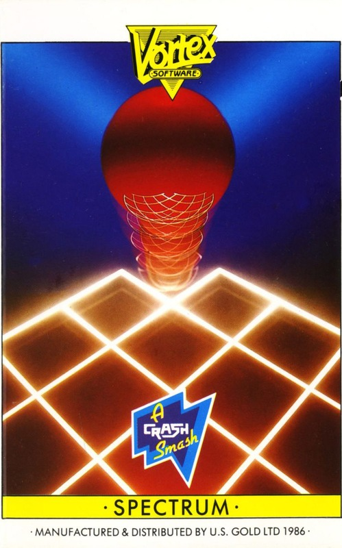
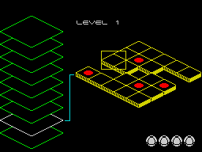
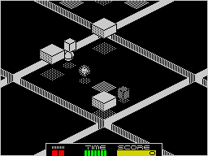

Revolution


{kind=link}

| Publisher: | Vortex |
| Price: | £9.95 |
| Year: | 1986 |
| Source: | CRASH, Issue 33 |

Vortex has an enviable reputation that spans virtually the entire history of Spectrum gaming, largely thanks to the programmer Costa Panayi (Android, Android II, TLL, Cyclone, Alien Highway and Highway Encounter) whose preoccupation with 3D representation has made each game outstanding and usually innovative. Now he’s turned his talents to something completely different with Revolution.
In this 3D game you control a versatile bouncing ball and the idea is to solve various puzzles on each game level. The action takes place on huge platforms suspended above bottomless ravines. Gaps of varying distance separate each platform, some are small and easily bounced over, while others are vast and take a lot of bouncing to get over. Being a bottomless ravine, going over the edge always ends in death for your ball. You move around by either bouncing or rolling. If for any reason the ball becomes stationary then you can get it bouncing again by using extra super bounce. A red bar indicator is provided to show the height of bounce being achieved, letting you estimate the amount of strength needed to reach an objective.

of levels that must be worked through,
while a plan of the current level is
revealed on the right
But what about the puzzles? They’re all identical in concept and consist of deactivating two grey boxes set a distance apart from each other. Touching a box with your ball turns it white and deactivates it for a short length of time. Next you must get your ball over to the other grey box and turn this white as well before the first block turns grey again in order to complete each puzzle. All fine and dandy. However, apart from the extremely short deactivation time limit, each puzzle contains various nasties, some animated some not. Like all nasties, they’re convinced that what you’re trying to do is wrong and are all out to stop you.
The animated ones scoot around just above the ground at great speed and any contact has disastrous results — your ball may be given a swift nudge, knocking it off course or even be sent over the platform edge to its doom.
Despite their savagery, the stationary perils are probably the hardest to negotiate. Arrows on the ground scoot your ball rapidly towards the direction in which they point. This either keeps you away from the block you’re aiming for, or once again sends you to your death off the edge. Solid patches of grid act as super bouncing plates and might fling you off the side or sproing you in completely the wrong direction again. The furry nasties with their waving flagella-like protrusion are instantly lethal and if your ball touches any of these then a life is lost.

as another problem zone is approached.
A mobile furry nasty, moving cube and
bounce-distorting floorpads are amongst
the hazards that must be negotiated
Each level must be completed before an automatic lift transports your sphere to a higher grade. There are nine levels in total in the game, each with progressively more and harder puzzles. The position of puzzles on a level is indicated by red circles on a map, shown on at the start of a level. During play the map screen can be accessed by pressing the M key. Your starting position (which is rarely the same) is also shown on this map by a yellow rectangle.
Five lives are provided for each game. When you lose one a new ball is shunted out of dock and automatically placed on the lift. This carries the ball up to the correct level and it’s then up to you to control where it goes.
On higher levels the deactivation time limit gets shorter and there is an overall time limit to each game shown by the descending green bar at the bottom of the screen. Beside it sits the score chart showing how many puzzles have been completed. A set amount of points is scored for each puzzle depending on its difficulty.
Just because you’ve managed to complete the game once don’t think playing it through is a doddle — each time a new game starts the puzzles and their positions are redistributed amongst the levels randomly!
CRITICISM
“I’ve been waiting for Costa Panayi to come back to the Spectrum scene since I finished Highway Encounter, and he certainly has come back well. Revolution is excellently presented with most of the ‘Costa Magic’ which means it’s very good and addictive. However its addictivity only works in short bursts. Most time is spent wandering around a lot of black background, and when I got to a problem I found I could often spend ages trying out the same boring method tens of times. The ball moves around pretty effectively, although it seems too accurate and doesn’t give the realism of Bounder or the playability of Gyroscope, which it vaguely resembles. It’s certainly nothing like HE and is quite original in what content there is. Many people should be quite addicted by the problem solving and random level layouts, but I couldn’t see enough in it to compare with Costa’s previous game.”
“What a pretty game, but what would you expect from the person who did the graphics (and programming) for the Highway games. Not only has this game got pretty graphics it also has plenty of addictive qualities and plenty of playability. It’s set in a very original playing arena and provides tasks which get progressively harder to complete as you go up the levels. The graphics are exquisite, your ball is excellently animated and well detailed as are all the other characters. Sound is a little lacking although there are a lot of nice spot effects but no tune on the title screen. The control is a bit dodgy at first but after some persistence it does get easier. I strongly recommend this one as it is exceedingly playable.”
“Another 3D game from Vortex, and what a good one it is, too. The puzzles are very difficult to complete, but this only makes the triumph on completing them all the more satisfying, rather than frustrating, as in some games. The graphics are superb, and Costa Panayi deserves a hefty pat on the back for them. The whole thing is very good indeed. Whilst being a departure from the old games by this author, Revolution still seems to have something that relates it to the Highway games. I like it!”
COMMENTS
| Control keys: | Q/A forward/back; K/L left/right; Z to N or SPACE for bounce energy |
| Joystick: | Kempston, Cursor, Interface 2 |
| Keyboard play: | Combination key presses allow for diagonal movement, making control tough at first |
| Use of colour: | Virtually monochrome but effective |
| Graphics: | Great animation, generally excellent |
| Sound: | Good spot effects, no title or game tunes |
| Skill levels: | Progressive |
| General rating: | An unusual and good looking game that provides a real challenge |
| Use of computer: | 89% |
| Graphics: | 91% |
| Playability: | 90% |
| Getting started: | 87% |
| Addictive qualities: | 93% |
| Value for money: | 88% |
| Overall: | 91% |